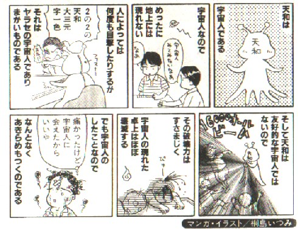

Hands 和了役。
（２５）天和
中国伝来の役満貫。親の第１ツモ牌を天牌という。その天牌によるアガリなので天和。
※天牌を得たのち、返す手で打ち出すのが地牌。この地牌によるアガリが本来の地和。
よく天和と９種９牌の流し宣言ではどちらが優先するかというQ＆Aを見かける。もっとも初期の麻雀では、全員が十三枚の配牌を終了したのち、親も第１ツモ牌を取得していた。そこで配牌終了時点での宣言である９種９牌が優先した。
しかしルールの変遷により、親は第１ツモ牌も配牌と同時に取得するようになった。そこで現在では、逆に９種９牌も第１ツモ終了時後に宣言することとになった。したがって現在では天和が優先する。
また、たとえ同時宣言ありとしても、アガリが優先になるというルールがメジャーである。
別名・天福・天胡・天湖・天符・天副・天合・天骨
英名・Hand from heaven（天から授かった手）
・Hevenly hand（天国の手）
・Hevens grace（優雅な天国）